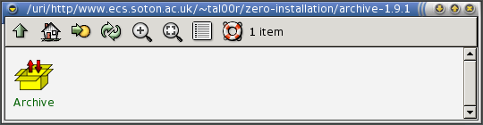

Thomas Leonard <tal00r at ecs.soton.ac.uk>, 2003
Software installation has always been a difficult issue. There are many different approaches to the problem. All the common ones have serious problems. This page is mainly aimed at Linux users, although other systems have similar issues.
The zero-installation system makes software installation not merely easy, but unnecessary. Users run their applications directly from the internet from the software author's pages. Caching makes this as fast as running a normal application after the first time, and allows off-line use.
First, we'll take a look at the current packaging systems used on Linux and see what problems they have. Then we'll try using the zero-installation system to run some software (you can use any recent Linux system to try it out).
The basic problem is: software authors want to put their software on their web site and let users easily get it and run it. Software is generally distributed in a variety of formats under Linux:
If installed to a system-wide location (so that other users can use the program easily) then the install step must typically be done as 'root', making this method of installation a major security risk (if the software is just normal application software, such as a word processor, which doesn't otherwise require root privileges).
If installed to the user's home directory then the user must do all the above, except:
Uninstallation can also be rather tricky, depending on how well the author has tested it.
This uses packages such as Debs (see above) but handles dependancies by automatically installing the packages that it depends upon.
This requires a central authority to produce the packages. If the user wants to use a third-party product, they must edit their sources.list file and refresh their database. Such packages often become out-of-date quickly.
All the above methods are either a lot of work, or run the install (unnecessarily) as root.
Although it allows other software to be run easily, the zero-installation system itself does require installation. Also, since it's currently a quickly-knocked-up prototype, it's probably quite hard to install. It might be buggy too, so don't run it on anything important; it's just a proof-of-concept. If you don't want to actually run it, you can still follow this tutorial to understand how it works.
The system works by making resources which are available via HTTP appear in the filesystem, using the LazyFS filesystem. LazyFS requires the coda kernel module, which comes with Linux 2.4 kernels.
Start by loading the coda module:
# modprobe coda
If that works, there's a good change you'll be able to try the system out. If not, it's probably either because you don't have coda (visit kernel.org and get a newer kernel) or, possibly, because it's compiled in.
Get the zero-installation code: Zero-Installtion-0.1.4 ALPHA PROTOTYPE [ Mirrors ].
Enter the directory and compile it (it requires glib):
# tar xzf zero-inst-0.1.4.tgz # cd zero-inst-0.1.4 # make cc `pkg-config --cflags glib-2.0` -Wall -g -O2 `pkg-config --libs glib-2.0` lazy.c -o lazy
Now run the 0install script. This is a little shell script that will create the cache directory (/var/cache/zero-install), the mount point (/uri) and the device file (/dev/cfs0) if any of them are missing. It will then start the system, and mount /uri for you:
# ./0install Creating coda device /dev/cfs0 Creating /uri Creating cache directory /var/cache/zero-inst Using helper: /home/tal00r/zero-inst-0.1.4/helper Flushing kernel cache... Mounting /uri... Ready...
Leave that running and switch to another window. Now check it worked:
# cat /uri/http/zero-install.sourceforge.net/test.txt It worked!
You can now run programs directly using a pathname based on their URI. We'll start with a simple shell script:
$ /uri/http/www.ecs.soton.ac.uk/~tal00r/zero-installation/hello.sh Hello World from sh
Of course, you can alias this or use other mechanisms to make it easy to use again (the exact syntax may depend on your shell):
$ alias hi=/uri/http/www.ecs.soton.ac.uk/~tal00r/zero-installation/hello.sh $ hi Hello World from sh
Notice that there was a brief delay on the first run, but the second run is instant. The program has been cached. Of course, the power of the system comes from handling dependancies. This next example runs a python program which, in turn, runs a new shell script:
$ cd /uri/http/www.ecs.soton.ac.uk/~tal00r/zero-installation $ ./testpy Hello from python! This is another shell script
If you'd like to try a graphical application, run this command to open a ROX-Filer window showing Archive. Click on it to run it. (note that ROX-Filer and pygtk are NOT yet in the zero-install system, so you do need them installed already)
$ rox /uri/http/www.ecs.soton.ac.uk/~tal00r/zero-installation/archive-1.9.1

Note that Archive requires ROX-Lib2 to run. That's OK; ROX-Lib2 will be run from the zero-installation system automatically.
If you want to experiment with providing your own programs through this system you'll need to run the build_meta command to create the directory listings (it creates .0inst-dir files recursively).
$ alias 0build=/uri/http/www.ecs.soton.ac.uk/~tal00r/zero-installation/tools/build_meta $ 0build public_html
Tip for developers: If you rebuild a directory that has already been cached, you can use 'rmdir' on the directory to force it to be reloaded (note, this does not behave like a regular rmdir; for one thing, the directory doesn't have to be empty). This will return an error to the rmdir command, but the contents will be refetched on the next access.
If you need to supply a different binary depending on the user's platform, you can use the .0inst-platform symlink. This example will run a compiled C program, choosing the correct binary for your platform (I've only compiled it for Linux-ix86, so this demo isn't very impressive, but you get the idea):
$ /uri/http/www.ecs.soton.ac.uk/~tal00r/zero-installation/.0inst-platform/hello_c Hello World from C!
The .0inst-platform is a symlink whose target is "Linux-ix86" (or whatever platform the user is running on).
To save bandwidth, because most people will be running these examples from normal Linux systems, they use the copy of /bin/sh, python and pygtk currently on your machine. In a full Zero-Installation system, even those things would be pulled in automatically.
We can use this system to provide binaries, shared libraries and so on. There needs to be a way to easily update the cache (currently, you have to unmount the filesystem and quit 'lazy', wipe the area of the cache you want to update and restart everything).
It isn't. Try it. Now.
I'm not. This system is built on application directories. It would never work without them. You didn't try it out, did you?
You have to get stuff over the web anyway the first time. The system caches everything, and will never even check that the cache is up-to-date if it can satisfy a request without updating.
There is effectively no speed hit to using stuff once it's downloaded. The fact that everything is referenced by fixed URIs instead of having to search means that this system can actually be faster in some cases. Consider loading a shared library. At the moment, a program must, on startup:
With Zero-installation, this becomes:
It also removes the need to run ldconfig at install time (handy, since there is no 'install time' ;-), losing a major source of errors and user confusion.
As far as network bandwidth goes, the worst-case situation is that you downloaded the entire archive, which is what you'd have had to do anyway. However, by default each file is downloaded on demand. Thus, if you want to run a ROX-Lib2 application like Archive, but you don't want to read the ROX-Lib2 developer reference documentation then it doesn't get downloaded (until you try to access it).
You can still install from CD. Either install an application in the normal AppDir fashion (ie, by dragging to your home directory), or by providing a web-cache on the CD and merging it with the master one (we could provide software to do this easily).
Yes. It's currently using HTTP because pretty much everyone can put stuff on a webserver, whereas it's often hard to find someone who will host other types of server. The scheme can use other methods if required.
The main difference between this and standard shares is the way the paths use the internet DNS system. This allows us to link to resources by fixed paths, in the same way that I can put up a link to ROX on this web page without worrying about where the user has 'installed' the web page.
Yes. As with the web, that works but it's not the intended way to do it. Like the web, you have links to the URIs, and you use the links normally.
For example, having opened the ROX-Filer directory showing Archive in the walk-through above, you can drag Archive from the window onto your panel. Now you access it by dragging things to compress to the panel icon as usual; no URIs.
You could also put it on the pinboard, bookmark the directory, add Archive to your Send To menu, or whatever. Web pages can provide the URIs in a clickable form (so clicking on a link opens the filer window). A 'distribution' could be nothing more than a web page listing links to high quality software for a particular audience.
Finally, if you want to get a newer version, or find related software, traditional systems mean you have to try and remember where you got it from, or hunt through the documentation. With the URI scheme, just select 'Show Location' from the panel menu and the directory containing Archive (on the remote server) will be opened.
Various levels of granularity can be used. A user could tell the system to cache an entire application, for example. Of course, dial-up users might also appreciate that they have to download a lot less stuff in total. A user with a slow, but easy to start, internet connection will probably prefer this scheme. A user who wants to take their laptop up a mountain, however, would probably want to get as much software as possible first.
However, knowing how much to download requires knowing what software the user may want to run in the future. Even the user doesn't know that. It's not a new problem. No modern system is 'closed'. There will always be an application that says "This program works well with 'foo'. You can get it from this web site...". Should installing the program also install 'foo'? Should installing ROX-Lib also install the README? The developer documentation? The python tutorial at python.org?
Why?
From what I've heard, that's something completely different. That tells you when something needs upgrading (which this scheme doesn't do) and then does a traditional download-unpack-setup.
Everything you've already accessed at least once will continue to work. Users trying software for the first time will find that it doesn't work due to broken links. This is not new, either. The download instructions for ROX-Filer tell users that they need to get GTK from www.gtk.org and libxml from www.xmlsoft.org. If those sites change their names, the download instructions will be broken. It really doesn't make any difference.
As with the regular web, people can leave redirections to the new site. Users will also be able to specify a list of redirections manually if required (this also allows all access to a particular library to use the user's modified version, for example).
About as secure as any system which ultimately involves running software written by people you don't know who live in far away countries. However, since the downloading is automatic, there are more chances for automatic checking (eg, verifying GPG signatures, etc).
To be more precise, it has all the advantages of application directories (no install step, so no chance for anything to run as root). In addition, if two users try to run the same application, they both automatically get the same cached copy, whereas without this each would have to install a separate copy to their home directory, or one user has to trust the other user not to have modified his copy, and use that.
The system can provide a visual indication that software is being downloaded. Eg, a small box appears at the bottom of the screen saying "Fetching resources from www.gimp.org. Please wait..." when the Gimp is run for the first time. This can have progress bars, and maybe even a cancel button (the system knows which user triggered the download).
Since there is no concept of software being 'installed' or 'not-installed', this is not required. The menu (or other launching device) simply shows applications that the user may want to run. They will be fetched on demand.
For example, the set of applications your system shows you on first install is the applications the distribution author thinks you might like. They may be already in the cache, or they may be loaded on demand (depending on the distribution's installer).
Indeed, the question is backwards. The menu doesn't show installed software; rather, the 'installed' software is what the user has put on the menu.
Currently, nothing is ever automatically removed from the cache. Users can choose the purging scheme that suits them. For users with broadband, that might mean removing anything that hasn't been accessed for a year. For users with dial-up and 80Gb disks, that probably means never ever removing anything.
Possibly, running gimp-1.2.3 could check for, and offer to remove, gimp-1.2.2, etc. It would also be possible to start from the user's list of applications (menu, panel, etc) and see which resources in the cache were 'reachable' and offer to delete any that weren't.
Link against .../libfoo/latest-1.2.x. This is a symlink to, eg libfoo/1.2.3. If the user enters the 'libfoo' directory and does a refresh, the link will now point to 1.2.4 and that will be fetched on demand.
If a program relies on a bugfix in libfoo-1.2.6 then it can check that 'latest-1.2.x' points to that version or later, and force a refresh if not.